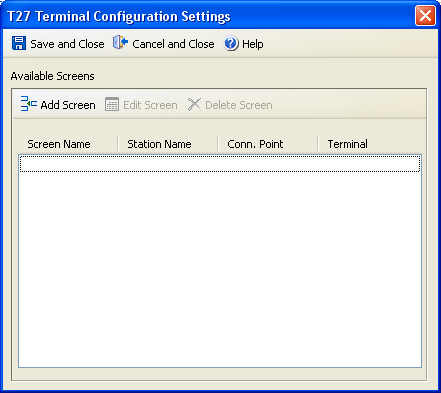

You can perform the following actions in this dialog:
Contents: Opens the BlueZone Display and Printer Help.
This window: Opens the BlueZone Display and Printer Help to this topic.
About: Opens a dialog with the product information.